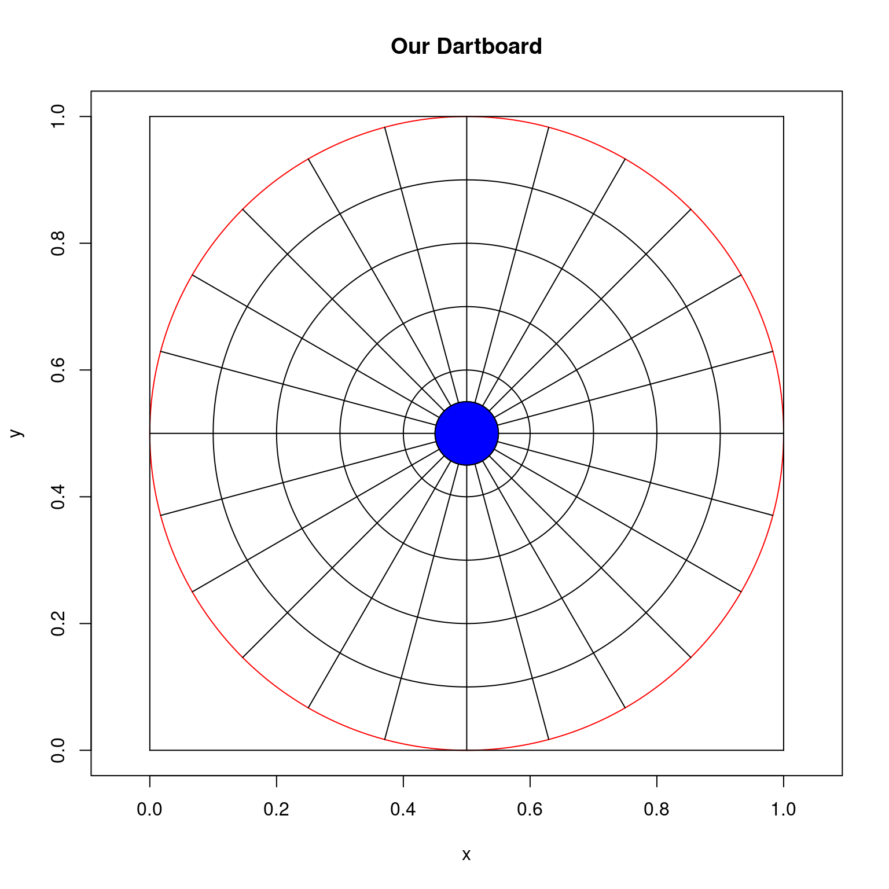
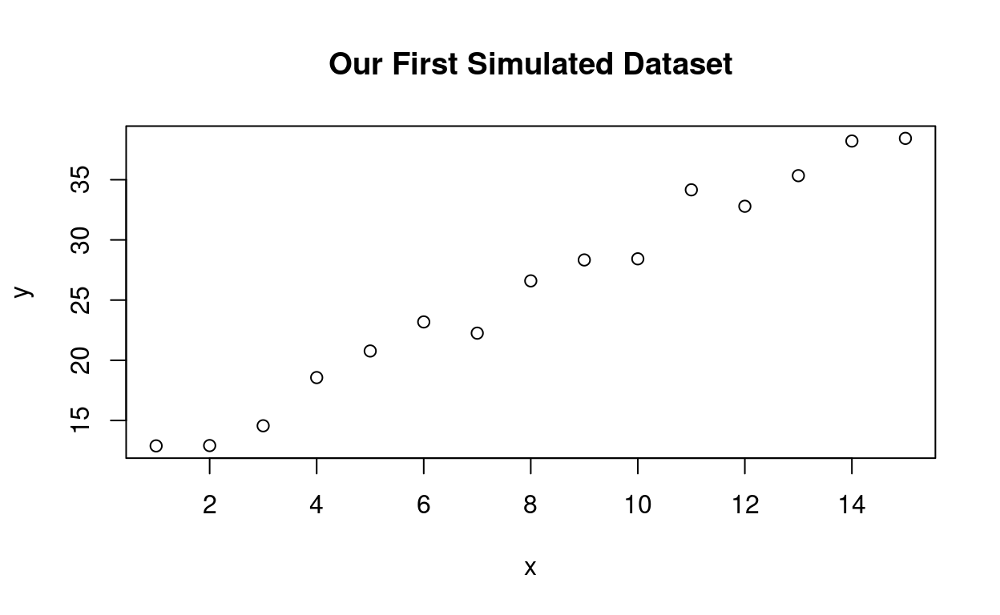

Learning Objectives
- Discover why statistical simulation is useful, and what we can use it for
- Understand the basic concepts of why statistical simulation works
- Look at problems that are difficult to solve purely by doing math, and figure out how we can solve them more easily with statistical simulation
- Simulate data from models that we have worked with (e.g. regression)
- Discuss simulation studies, and discover why they have become a mainstay in the statistical landscape
- Learn how to design and perform simulation studies
Orientation of/for the workshop
This workshop assumes some basic familiarity with working in
R. My hope is that the previous lessons have provided the necessary background for this part of the short course. If there are any concerns about inability to understand this section, please let me know. I understand that this bridge program is a lot of information to take in all at once, but I promise that everything covered here will come upStatistical simulation puts a large emphasis on repeated random sampling. For this reason, the idea of using
forloops inRis essential to automate the generation of random samples. I would like to note that there are many ways to implement the methods covered here without using aforloop, but I believe that it helps to build good intuition for what is happening. If you are comfortable with alternative methods, you are free to use those instead.In order to focus this workshop on coding, we developed this interactive website for you to play in a set of “sandboxes” and try your hand at implementing the methods we are discussing. When each code chunk is ready to run (all can be edited, many have the code prepared for you), you can click on “Run Code”. This will run
Rin the background on a server. Unlike previous sections of the course, there is no explicit grading feature for the exercises and challenge questions. This is due to the randomness that comes alongside statistical simulation. However, code solutionsare provided in some cases so you can see a solution - but you will learn more by trying the problems first before seeing the answer. Each sandbox functions independently, which means that you can pick up working at any place in the documents and re-set your work without impacting other work (this is VERY different from howRusually works!). Hopefully this allows you to focus on the code and what it does… The “Start over” button can be used on any individual sandbox or you can use the one on the left tile will re-set all the code chunks to the original status.This specific workshop is being taught by John Smith, but many others are taught by Greta Linse and Esther Birch and co-organized by the MSU Library, Statistical Consulting and Research Services (SCRS), and the Department of Mathematical Sciences. More details on us and other workshops are available at the end of the session or via https://www.montana.edu/datascience/training/#workshop-recordings.
Statistical Simulation Introduction
We live in an era where computing resources and procedures are no longer the hard limit that they used to be. Computers are much faster than they have ever been, development level executable code is readily available, and we have plenty of questions about complex processes. As a result, the idea of statistical simulation has become a common tool for statisticians to test their methods, investigate hard problems, and to illustrate concepts.
Underlying statistical simulation is a simple concept: the law of large numbers. If we flip a fair coin 10 times and get 7 heads and 3 tails, it may just be good luck. But, as we flip the coin more and more, we expect that we will arrive somewhere around a 50% probability. This forms the basis for statistical simulation: if we repeat a process many times, the collection of individual trials will come together to paint a complete picture about the behavior that we should expect to see.
Statistical simulation also provides us with a fast avenue to attack problems where it would otherwise be very difficult to work out an exact solution. These types of problems come up quite often in statistics: sometimes there is no closed form solution, and instead we will have to rely on generating random samples from the process in order to figure out an answer. This is best demonstrated by an example, which will become the focal problem that we work on throughout this portion of the short course.
Suppose that you are quite good at throwing darts. You are good enough that you always land your darts on the square dartboard, and they are concentrated towards the center rather than the edges. Let’s say that in order to throw, you generate your \(x\) and \(y\) coordinates from independent Beta distributions, with parameters \(\alpha = 3\) and \(\beta = 3\).
Our question is simple: if this is representative of the way that you throw, what is the probability that you land on the circular part of the dart board (inside of the red circle in the figure below)?

This doesn’t seem like it would be too difficult to work out. But, if we look at the math it is actually quite messy….
\[ X \sim Beta(\alpha = 3, \beta = 3), Y \sim Beta(\alpha = 3, \beta = 3) \\ P((X - .5)^2 + (Y - .5)^2 < .5^2) = \int_0 ^ 1 \int_{.5-\sqrt{.25 - (y- .5)^2}} ^{.5 + \sqrt{.25 - (y - .5)^2}} 900 x^2 (1 - x)^2 \cdot y^2 (1 - y^2) dx dy \\ \approx 0.990856 \] Well, this doesn’t look so fun anymore, does it? This would require quite a number of tricks, a lot of careful calculation to make sure that no mistakes are made, and a whole lot of time! But with statistical simulation, this problem becomes very easy. In fact, by the end of this lesson, we will all use statistical simulation to get an answer to how likely it is that you hit the circular portion of the dartboard (and more!).
Simulating Data
One place where simulation comes up quite frequently in statistics is generating data. As statisticians, when we work on real problems, we almost never know any of the true parameters. If we did, our job would be too easy! When we run regression analyses to try to determine the impact that different input variables have on our response variable, we are estimating them and not just treating them as fixed.
When we study different statistical methods, we often want to to know how well our method is doing. Does it have advantages over other methods? Are we getting good estimates of our regression coefficients? How close is our estimate to the truth? Are we getting good predictions? Where do the strengths of our method lie? Where do the weaknesses of our method lie? If we test these methods on real data that someone collected in the field, we may never be able to answer some of these questions. But… if we knew the true values of the parameters… then we could see how close we are getting…
This is where the idea of simulating data comes
from. We can pick values for the parameters of, say, our regression
model. Next we can create a synthetic dataset using these parameter
values, and see how close our parameter estimates are to the truth. This
affords us a way to check the performance of our method. For an example
for us to work through, let us think back to simple linear regression,
and the lm() function.
A simple linear regression model has the form:
\(y_i = \beta_0 + \beta_1 x_i + \epsilon_i, \text{ where } \epsilon_i \sim N(0, \sigma^2)\)
Let’s start simple, and say that \(\{x_1,
x_2, ..., x_{15}\} = 1, 2, ..., 15\). Now we need to pick values
for \(\beta_0\), \(\beta_1\), and \(\sigma^2\). Let’s say that \(\beta_0 = 10\), \(\beta_1 = 2\), and \(\sigma^2 = 1\). To generate data from this
model, we can do the following in a for loop. I will note
that there are other ways to do with without using a
for loop, but I think that it helps to illuminate that the
process is for generating data.
## set seed
set.seed(08112023)
## create x values
x <- 1:15
## store parameter values
beta0 <- 10
beta1 <- 2
sigma_sq <- 1
## create vector for y values to be stored
y <- rep(NA, length(x))
## for loop
for (i in 1:length(y)){
## generate epsilon value using a normal distribution with
## a mean of 0 and standard deviation of sigma
epsilon_i <- rnorm(n = 1, mean = 0, sd = sqrt(sigma_sq))
## use the simple linear regression relationship to generate
## an observation y_i, using x_i, beta0, beta1, and epsilon_i
y[i] <- beta0 + beta1 * x[i] + epsilon_i
}
## create a plot of our data
plot(x, y, main = 'Our First Simulated Dataset')
Congratulations! We have simulated our first dataset! Now, let’s use
the lm() function to see how close our parameter estimates
are to the true values (which we know!).
## fit linear model with y as response and x as covariate
sim_data_lm <- lm(y ~ x)
## output summary of lm
summary(sim_data_lm)##
## Call:
## lm(formula = y ~ x)
##
## Residuals:
## Min 1Q Median 3Q Max
## -1.6173 -1.1330 0.5487 0.7659 2.4577
##
## Coefficients:
## Estimate Std. Error t value Pr(>|t|)
## (Intercept) 10.16767 0.68173 14.91 1.48e-09 ***
## x 1.95773 0.07498 26.11 1.29e-12 ***
## ---
## Signif. codes: 0 '***' 0.001 '**' 0.01 '*' 0.05 '.' 0.1 ' ' 1
##
## Residual standard error: 1.255 on 13 degrees of freedom
## Multiple R-squared: 0.9813, Adjusted R-squared: 0.9798
## F-statistic: 681.7 on 1 and 13 DF, p-value: 1.285e-12Our lm() regression model estimates \(\hat{\beta}_0 \approx\) 10.1676698, \(\hat{\beta}_1 \approx\) 1.9577292, and
\(\hat{\sigma}^2 \approx\) 1.5741546.
These are close to our true values of \(\beta_0 = 10\), \(\beta_1 = 2\), and \(\sigma^2 = 1\)!
Exercise 1
Modify the above code so that x now takes values
1:50, and change the regression parameters to \(\beta_0 = -3\), \(\beta_1 = 1.7\), and \(\sigma^2 = 2\). Then, fit a linear model
using the lm() command and report the parameter estimates,
\(\hat{\beta}_0, \hat{\beta}_1,\) and
\(\hat{\sigma}^2\).
## set seed
set.seed(03061994)
## exercise 1 code goes here!Exercise 2
In this exercise, we will start to think about the dartboard problem
again. Write an R code chunk that:
- Generates a single
xcoordinate and a singleycoordinate for a dartboard throw using a \(Beta(\alpha = 3, \beta = 3)\) distribution (hint: you may want to use therbeta()function) - Checks whether or not the throw landed within the big circle of the dartboard (hint: it is a circle of radius \(r = .5\) with a center at \((.5, .5)\))
- Stores the
xcoordinate,ycoordinate, and whether or not the throw landed within the inner circle of the board.
## set seed
set.seed(05102022)
## exercise 2 code goes here!## set seed
set.seed(05102022)
## exercise 2 code goes here!
x <- rbeta(n = 1, shape1 = 3, shape2 = 3)
y <- rbeta(n = 1, shape1 = 3, shape2 = 3)
on_board <- (x - .5)^2 + (y - .5^2) < .5^2
x; y; on_board;Monte Carlo and Learning from Simulation
As mentioned in the introduction, the key to learning from simulation is that we can repeat these synthetic experiments over and over again with different datasets. This helps us to learn about what we can expect on average, and what we expect to see as our best and worst cases. This idea of performing our simulation over and over again using repeated random sampling to study the properties is called Monte Carlo simulation, named after the world famous casino in Monaco. Monte Carlo methods are a very useful class of tools when it is difficult (or impossible!) to try to solve the problem using classical methods. A short and incomplete list of examples includes:
- Climate modeling
- Computer experiments and emulation
- Bayesian statistics
- Time series analysis
- Simulation studies
The last highlighted example, simulation studies, is something that we are going to talk about in this short course. Simulation studies are a type of synthetic experiment that statisticians use to learn about the properties of various statistical methods that they employ or develop. By generating the data ourselves we have access to the ground truth, and we can use this to analyze performance.
When I was in graduate school, I attended a talk from Dr. Andrew Gelman. His talk really opened my eyes about the power of statistical simulation and simulation studies. In his talk he said that the very first thing that he does when he comes up with a new model for a real world problem is to simulate data from the model and check if the parameters can be recovered. This allows us to obtain knowledge about what we can expect when we fit the model to the real data, and it helps us to side-step problems down the road. The last thing that we want is to spend days, weeks, or months developing a new model and fitting it to our data only to realize that something is wrong. Indeed, statistical simulation is a powerful tool to have in our toolbox, and can be used in almost any stage of our analyses.
In terms of what we may want to answer using a simulation study, there are many different options! Another incomplete list of options includes:
- Parameter estimation: how close are we to the true parameter values? How do different values of the parameters change our method’s ability to estimate them?
- Prediction: if we fit our model to training data, how well do we predict out of sample?
- Comparison: often times we have options for what type of method or model we want to use to fit the data. How do these compare with one another? What situations is a particular model better than it’s competitors? What situations is it worse?
When it is all said and done, a simulation study has a pretty simple recipe for us to follow. Some things might change depending on the exact question we are asking, but the general outline of a simulation study looks as follows:
- Simulate a new dataset
- Fit the data using your method of choice (or, for comparisons, maybe a bunch of methods)
- Store any relevant information (out-of-sample predictions, parameter estimates)
- Repeat this process a large number of times
- Look at your results; how you look at them will depend on what it is you are interested in learning!
When we are finished, we have a large number of results that we can use to explore the average behavior of the process. This is often repeated for different parameter values and different data sizes so that we can look at a range of different scenarios. We do not want to lose sight of the forest for a single tree!
Challenge 1
In this challenge, we are going to start investigating the dartboard problem ourselves! As a quick refresher, let us suppose that you throw your darts by generating an x coordinate from a Beta(3, 3) distribution and then generating a y coordinate from a Beta(3, 3) distribution. Perform the following:
- Generate 100 random throws. Store the x coordinates, y coordinates, and whether or not it hit the inner circle of the dartboard
- Use ggplot to create a scatterplot of the dartboard throws. Color the points of the scatterplot by whether or not the dart landed on inner circle. What do you notice?
- Create histograms of the coordinates for the x and y throws. Are they similar?
- Calculate the proportion of throws that land on the inner circle of the dartboard. Is this close to the truth? (Recall that we computed the probability to be roughly 0.990856)
## set seed
set.seed(06092022)
## challenge 1 code goes here!## set seed
set.seed(06092022)
## create places to store everything
x <- rep(NA, 100)
y <- rep(NA, 100)
on_board <- rep(NA, 100)
## part 1: simulate x, y, and calculate on board
## use a for loop to simulate coordinates and
## check if they are on the board
for (i in 1:length(x)){
x[i] <- rbeta(n = 1, shape1 = 3, shape2 = 3)
y[i] <- rbeta(n = 1, shape1 = 3, shape2 = 3)
on_board[i] <- (x[i] - .5)^2 + (y[i] - .5)^2 < .5^2
}
## create a data frame to pass to ggplot
darts_df <- data.frame(x = x, y = y, on_board = on_board)
## part 2: scatterplot
darts_df %>% ggplot(aes(x = x, y = y, col = on_board)) + geom_point()
## part 3: histograms
## x coordinate histogram
darts_df %>% ggplot(aes(x = x)) + geom_histogram(fill = 'red')
## y coordinate histogram
darts_df %>% ggplot(aes(x = y)) + geom_histogram(fill = 'blue')
## part 4: on_board calculation
darts_df %>% summarize(on_board_prop = mean(on_board))
## this is very close to our estimate!Challenge 2
In this challenge, we are going to explore the impact of increasing our sample size. Repeat the previous challenge, but instead use samples sizes of n = 1000, and then n = 100000.
- Generate 100 random throws. Store the x coordinates, y coordinates, and whether or not it hit the inner circle of the dartboard
- Use ggplot to create a scatterplot of the dartboard throws. Color the points of the scatterplot by whether or not the dart landed on inner circle. What do you notice?
- Create histograms of the coordinates for the x and y throws. Are they similar?
- Calculate the proportion of throws that land on the inner circle of the dartboard. Is this close to the truth? (Recall that we computed the probability to be roughly 0.990856)
- What happens to the histograms and the proportions as we increase the sample size? Why does this happen?
## set seed
set.seed(06092022)
## challenge 2 code goes here!## set seed
set.seed(06092022)
## create places to store everything
n <- 100000
x <- rep(NA, n)
y <- rep(NA, n)
on_board <- rep(NA, n)
## part 1: simulate x, y, and calculate on board
## use a for loop to simulate coordinates and
## check if they are on the board
for (i in 1:length(x)){
x[i] <- rbeta(n = 1, shape1 = 3, shape2 = 3)
y[i] <- rbeta(n = 1, shape1 = 3, shape2 = 3)
on_board[i] <- (x[i] - .5)^2 + (y[i] - .5)^2 < .5^2
}
## create a data frame to pass to ggplot
darts_df <- data.frame(x = x, y = y, on_board = on_board)
## part 2: scatterplot
darts_df %>% ggplot(aes(x = x, y = y, col = on_board)) + geom_point()
## part 3: histograms
## x coordinate histogram
darts_df %>% ggplot(aes(x = x)) + geom_histogram(fill = 'red')
## y coordinate histogram
darts_df %>% ggplot(aes(x = y)) + geom_histogram(fill = 'blue')
## part 4: on_board calculation
darts_df %>% summarize(on_board_prop = mean(on_board))
## this is very close to our estimate!Challenge 3
Last but not least, we are going to do a comparison simulation study. This is going to be in the form of a dart throwing contest. The winner is going to be the person who throws the most bullseyes!
There are three participants:
- You: as we established, you throw by taking your x and y coordinates from a Beta distribution with alpha = 3 and beta = 3.
- Me: I throw by generating my x and y coordinates from a beta distribution with alpha = .5 and beta = .5
- Carlos Monte: Carlos is a real darts sharpshooter. Carlos always hits close to the center of the board, throwing his darts by generating his x and y coordinates from a Uniform distribution, with min = .3 and max = .7 (hint: you can use runif to generate from a uniform distribution)
We want to see who can get the most bullseyes. Here are the rules:
- Each player gets 10,000 throws
- You have to store the x and y coordinates and whether or not it hit the bullseye for each player
- The bullseye is a circle with radius .05, centered at x = .5, y = .5
- Create plots of each players throws (hint: facet wrapping may be useful!). How do they differ? Whose throws look the best? Whose throws look the worst?
- Calculate the proportion of throws that land on bullseye for each player. Who wins the contest?
## set seed
set.seed(06092022)
## challenge 3 code goes here!## set seed
set.seed(06092022)
## create places to store everything
n <- 10000
x_me <- rep(NA, n)
y_me <- rep(NA, n)
on_board_me <- rep(NA, n)
x_john <- rep(NA, n)
y_john <- rep(NA, n)
on_board_john <- rep(NA, n)
x_cm <- rep(NA, n)
y_cm <- rep(NA, n)
on_board_cm <- rep(NA, n)
## part 1: simulate x, y, and calculate on board
## use a for loop to simulate coordinates and
## check if they are on the board
for (i in 1:n){
## your dart throws
x_me[i] <- rbeta(n = 1, shape1 = 3, shape2 = 3)
y_me[i] <- rbeta(n = 1, shape1 = 3, shape2 = 3)
on_board_me[i] <- (x_me[i] - .5)^2 + (y_me[i] - .5)^2 < .05^2
## john's dart throws
x_john[i] <- rbeta(n = 1, shape1 = .5, shape2 = .5)
y_john[i] <- rbeta(n = 1, shape1 = .5, shape2 = .5)
on_board_john[i] <- (x_john[i] - .5)^2 + (y_john[i] - .5)^2 < .05^2
## carlos's dart throws
x_cm[i] <- runif(n = 1, min = .3, max = .7)
y_cm[i] <- runif(n = 1, min = .3, max = .7)
on_board_cm[i] <- (x_cm[i] - .5)^2 + (y_cm[i] - .5)^2 < .05^2
}
## create a data frame to pass to ggplot
darts_df <- data.frame(x = c(x_me, x_john, x_cm), y = c(y_me, y_john, y_cm), on_board = c(on_board_me, on_board_john, on_board_cm), competitor = c(rep('me', n), rep('john', n), rep('carlos', n)))
## part 2: scatterplot
darts_df %>% ggplot(aes(x = x, y = y, col = competitor)) + geom_point()
## part 3: crowning the winner
darts_df %>% group_by(competitor) %>% summarise(bullseye = mean(on_board))Designing a Simulation Study for Linear Regression
We have spent the last couple of challenges developing an intuition for Monte Carlo methods and statistical simulation: how to simulate data, how to create code for them, how to visualize and summarize results, and what happens as we increase the sample size. Now we are going to combine these elements all into one big exercise, and perform our first simulation study.
Our simulation study will focus on how well we estimate parameters in a linear regression model. We already learned how to simulate data from a linear regression model, so we are already part of the way there! The exercise is broken into multiple parts, so that we can perform a full blown simulation study with different parameter values.
Challenge 4: Part 1
We are going to start by doing something that we already know how to do: simulate data from a linear regression model, fit a linear model with lm(), and extract the parameter estimates. The only difference is that we are going to be doing this 10,000 times!
Here is what we are going to do:
- Let x = 1:50, beta0 = 10, beta1 = 2, and sigma_sq = 1
- Create vectors of length 10,000 to store estimates of beta0, beta1, and sigma_sq
- Write a for loop that: 1) generates data from our model; 2) fits a linear model using lm(); 3) extracts the estimates of beta0, beta1, and sigma_sq and stores them in our vector; 4) repeat this process 10,000 times
- Create a histogram of each of the three quantities. How close are they to the truth?
- As a reminder, we already have code that simulates data from a linear model, and we have already done challenge questions that require us to create vectors and store information from the simulation within them.
## set seed
set.seed(08021960)
## parameter values
x <- 1:50
beta0 <- 10
beta1 <- 2
sigma_sq <- 1
n <- 10000
## challenge 4 code goes here!## set seed
set.seed(08021960)
## parameter values
x <- 1:50
beta0 <- 10
beta1 <- 2
sigma_sq <- 1
n <- 10000
## create vectors
beta0_est <- rep(NA, n)
beta1_est <- rep(NA, n)
sigma_sq_est <- rep(NA, n)
## for loop
for (i in 1:n){
## simulate data. note that you can use an additional for loop here instead!
y <- beta0 + beta1 * x + rnorm(length(x), mean = 0, sd = sqrt(sigma_sq))
## fit regression
lm_sim <- lm(y ~ x)
## extract and store estimates of parameters
beta0_est[i] <- lm_sim$coefficients[1]
beta1_est[i] <- lm_sim$coefficients[2]
sigma_sq_est[i] <- summary(lm_sim)$sigma^2
}
## make a dataframe
sim_study_df <- data.frame(beta0_est = beta0_est,
beta1_est = beta1_est,
sigma_sq_est = sigma_sq_est)
## create histograms
## beta0
sim_study_df %>% ggplot(aes(x = beta0_est)) + geom_histogram(fill = 'red')
## beta1
sim_study_df %>% ggplot(aes(x = beta1_est)) + geom_histogram(fill = 'blue')
## sigma_sq
sim_study_df %>% ggplot(aes(x = sigma_sq_est)) + geom_histogram(fill = 'green')Challenge 4: Part 2
Congratulations! We have performed our first statistical simulation study! This is wonderful news. Now, we are going to build some intuition on what happens under different cases.
Repeat Challenge 4 Part 1, but instead of sigma_sq = 1, use sigma_sq = 5 and then sigma_sq = 20. What happens as we increase the error variance? How do the histograms of our parameter estimates look different?
## set seed
set.seed(08021960)
## parameter values
x <- 1:50
beta0 <- 10
beta1 <- 2
sigma_sq <- 5
n <- 10000
## challenge 4 code for sigma_sq = 5 goes here!
## set seed again
set.seed(08021960)
## parameter values
x <- 1:50
beta0 <- 10
beta1 <- 2
sigma_sq <- 20
n <- 10000
## challenge 4 code for sigma_sq = 20 goes here!## set seed
set.seed(08021960)
## parameter values
x <- 1:50
beta0 <- 10
beta1 <- 2
sigma_sq <- 5
n <- 10000
## create vectors
beta0_est <- rep(NA, n)
beta1_est <- rep(NA, n)
sigma_sq_est <- rep(NA, n)
## for loop
for (i in 1:n){
## simulate data. note that you can use an additional for loop here instead!
y <- beta0 + beta1 * x + rnorm(length(x), mean = 0, sd = sqrt(sigma_sq))
## fit regression
lm_sim <- lm(y ~ x)
## extract and store estimates of parameters
beta0_est[i] <- lm_sim$coefficients[1]
beta1_est[i] <- lm_sim$coefficients[2]
sigma_sq_est[i] <- summary(lm_sim)$sigma^2
}
## make a dataframe
sim_study_df <- data.frame(beta0_est = beta0_est,
beta1_est = beta1_est,
sigma_sq_est = sigma_sq_est)
## create histograms
## beta0
sim_study_df %>% ggplot(aes(x = beta0_est)) + geom_histogram(fill = 'red')
## beta1
sim_study_df %>% ggplot(aes(x = beta1_est)) + geom_histogram(fill = 'blue')
## sigma_sq
sim_study_df %>% ggplot(aes(x = sigma_sq_est)) + geom_histogram(fill = 'green')
## set seed
set.seed(08021960)
## parameter values
x <- 1:50
beta0 <- 10
beta1 <- 2
sigma_sq <- 20
n <- 10000
## create vectors
beta0_est <- rep(NA, n)
beta1_est <- rep(NA, n)
sigma_sq_est <- rep(NA, n)
## for loop
for (i in 1:n){
## simulate data. note that you can use an additional for loop here instead!
y <- beta0 + beta1 * x + rnorm(length(x), mean = 0, sd = sqrt(sigma_sq))
## fit regression
lm_sim <- lm(y ~ x)
## extract and store estimates of parameters
beta0_est[i] <- lm_sim$coefficients[1]
beta1_est[i] <- lm_sim$coefficients[2]
sigma_sq_est[i] <- summary(lm_sim)$sigma^2
}
## make a dataframe
sim_study_df <- data.frame(beta0_est = beta0_est,
beta1_est = beta1_est,
sigma_sq_est = sigma_sq_est)
## create histograms
## beta0
sim_study_df %>% ggplot(aes(x = beta0_est)) + geom_histogram(fill = 'red')
## beta1
sim_study_df %>% ggplot(aes(x = beta1_est)) + geom_histogram(fill = 'blue')
## sigma_sq
sim_study_df %>% ggplot(aes(x = sigma_sq_est)) + geom_histogram(fill = 'green')We have now performed a simulation study where we change the values of \(\sigma^2\) to see how it changes the estimation of the other regression parameters! This is a great topic to learn about, and it will be very useful background information for your linear models sequence. Now, we are going to move into the last challenge, which is more open ended.
Challenge 4: Part 3
In this challenge, I want you to investigate something using a linear regression simulation study. You can investigate whatever YOU find interesting: this might involve changing other parameters used to generate the data, the length of x and y, or the number of times that we repeat the simulation! Choose something that is interesting to you, develop a hypothesis, and test it. What do you find?
## set seed
set.seed(08021960)
## parameter values
x <- 1:50
beta0 <- 10
beta1 <- 2
sigma_sq <- 5
n <- 10000
## challenge 4 code for sigma_sq = 5 goes here!
## set seed again
set.seed(08021960)
## parameter values
x <- 1:50
beta0 <- 10
beta1 <- 2
sigma_sq <- 20
n <- 10000
## challenge 4 code for sigma_sq = 20 goes here!## set seed
set.seed(08021960)
## :)Montana State University R Workshops Team
These materials were adapted from materials generated by the Data Carpentries (https://datacarpentry.org/) and were originally developed at MSU by Dr. Allison Theobold. The workshop series is co-organized by the Montana State University Library, Department of Mathematical Sciences, and Statistical Consulting and Research Services (SCRS, https://www.montana.edu/statisticalconsulting/). SCRS is supported by Montana INBRE (National Institutes of Health, Institute of General Medical Sciences Grant Number P20GM103474). The workshops for 2020-2022 were supported by Faculty Excellence Grants from MSU’s Center for Faculty Excellence.
Research related to the development of these workshops appeared in:
- Allison S. Theobold, Stacey A. Hancock & Sara Mannheimer (2021) Designing Data Science Workshops for Data-Intensive Environmental Science Research, Journal of Statistics and Data Science Education, 29:sup1, S83-S94, DOI: 10.1080/10691898.2020.1854636
The workshops for 2022-2023 involve modifications of materials and
are licensed CC-BY.  This work is licensed under a Creative Commons
Attribution 4.0 International License.
This work is licensed under a Creative Commons
Attribution 4.0 International License.
The workshops for 2022-2023 involve modifications of materials and are being taught by:
Greta Linse
- Greta Linse is the Interim Director of Statistical Consulting and Research Services (https://www.montana.edu/statisticalconsulting/) and the Project Manager for the Human Ecology Learning and Problem Solving (HELPS) Lab (https://helpslab.montana.edu). Greta has been teaching, documenting and working with statistical software including R and RStudio for over 10 years.
Esther Birch
- Esther Birch is an instructor at MSU who has been teaching Introduction to Statistics and Intermediate Statistics full-time since 2018, when she received her M.S. in statistics. Additionally, she is the Director of the Math Testing Center. Esther greatly enjoys teaching coding in R, as well as making visualizations. Outside of statistics, she can be found puttering in her garden or losing balls on the golf course.
Fall 2022 instructors also included:
Sara Mannheimer
- Sara Mannheimer is an Associate Professor and Data Librarian at Montana State University, where she helps shape practices and theories for curation, publication, and preservation of data. Her research examines the social, ethical, and technical issues of a data-driven world. She is the project lead for the MSU Dataset Search, and she is working on a book about data curation to support responsible qualitative data reuse and big social research.
Harley Clifton
- Harley Clifton is an undergraduate senior pursuing a degree in Mathematics (Statistics Option) with a minor in Psychology. She enjoys teaching nuanced coding skills and Data Visualization strategies through her experience as a Teaching Assistant for STAT 216 and STAT 408. Harley recently attended the Summer Institute in Biostatistics and Undergraduate Data Science at the University of California Irvine, funded by the National Institute Of Allergy And Infectious Diseases of the National Institutes of Health (under Award Number R25AI170491). Her areas of interest include quantifying behaviors and societal attitudes, behavior modification to reduce discrimination, Deaf culture and history, and women’s health.
Eliot Liucci
- Eliot Liucci is a senior in the Mathematics (Statistics Option) Program here at Montana State University. He is currently working on a research project with the Mathematics and Statistics Center to analyze the impact of different time based variables on overall MSC foot traffic and usage. Throughout his experience as a Teaching Assistant for STAT 216 and STAT 217, Eliot has gained a deeper understanding of statistical methods and educational approaches. Eliot will graduate at the end of Fall 2022 with his bachelors and will start the M.S. in Statistics program in Spring 2023. His interests include environmental statistics, video games, and he restores vintage automobiles and motorcycles in his free time.
Mark Greenwood
- Mark Greenwood is a Professor of Statistics in the Department of Mathematical Sciences at Montana State University and the former Director of Statistical Consulting and Research Services (https://www.montana.edu/statisticalconsulting/). His research interests have involved statistical methods and applications in environmental sciences, education, and biological sciences. Recent work has involved researching diagnostic methods for Multiple Sclerosis. His current research grants include funding from the Mountain West IDeA Clinical and Translational Research - Infrastructure Network (National Institute of General Medical Sciences Grant 5U54GM104944-08) and a grant from the National Multiple Sclerosis Society (RG-1907-34348).
JW Smith
- John is an Assistant Professor of Statistics in the Department of Mathematical Sciences at Montana State University. His research interests include Bayesian hierarchical modeling, Gaussian Process surrogate modeling, Time Series Analysis, and the simulation, calibration, and inference of large scale dynamical systems, particularly for applications in ecology. The creation of the short course material for the statistical simulation module and the execution of the bridge program was supported by Montana State University’s Center for Faculty Excellence grant. In addition, Dr. Smith receives support from the National Science Foundation AI Institute for Dynamical Systems grant.